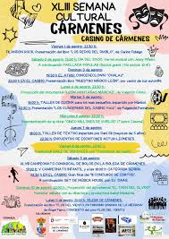

Asociación cultural La Mediana
Contenido inicial de la asociación.
Publicaciones
Accede a nuestro archivo de documentos y publicaciones oficiales.
Ver publicacionesSemanas culturales


La Asociación cultural La Mediana puso en pie en el año 1985 la celebración de las Semanas Culturales, durante los meses de agosto, cuando una gran parte de los hijos del pueblo regresan al mismo para pasar sus vacaciones. Sus impulsores fueron tres amigos y vecinos del pueblo: José Antonio Llamas, Fulgencio Fernández y Ángel Fierro, más la complicidad de algunos jóvenes como Toño Manilla y el malogrado Fiti. El talante de estos encuentros con la cultura intentó en todo momento tener como sello un ejercicio de seriedad y calidad. Se procuró dar cabida a todo tipo de manifestación artística, literaria, musical y plástica, siendo la entrada a los actos totalmente gratuita. Estas manifestaciones se celebraron en el Casino y fueron pioneras en la provincia de León, donde aún no existían.
Ver semanas culturalesTablón de Anuncios
Asamblea General Ordinaria: Se convocará a todos los socios para la presentación de cuentas y proyectos del año.
Próximas actividades: Pronto publicaremos el calendario con los próximos eventos y talleres de la asociación.
Quiénes somos
Nuestra Historia
Texto descriptivo sobre la fundación y la trayectoria de la Asociación Cultural de La Mediana.
Fines de la Asociación
- Promoción de la cultura local.
- Organización de eventos y actividades para los socios.
- Conservación del patrimonio de la zona.
Contacto y Redes Sociales
Puedes encontrarnos en nuestra sede o ponerte en contacto con nosotros para cualquier consulta.
Galería de fotos


Explora nuestro archivo fotográfico completo a tamaño real.
Ver galería completaRevista Picogallo
Lee y descarga los números de nuestra revista.